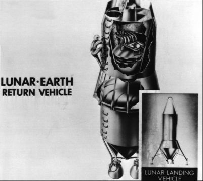

![[Previous Page]](http://www.dfrc.nasa.gov/GIF/previous.gif)
![[Next Page]](http://www.dfrc.nasa.gov/GIF/next.gif)

As part of its legacy NASA inherited the insight of an ad hoc Space Technology Committee into what some of its research goals should be. At the behest of James H. Doolittle, Chairman of NACA's Main Committee, in February 1958 H. Guyford Stever of the Massachusetts Institute of Technology had headed a group that examined a wide variety of possible space projects, giving NACA needed guidance for research into space technology. Exploration of the solar system was seen as an arena where man, as opposed to mere machines, would definitely be needed. When NASA opened for business in October 1958, this recommendation in the Stever Committee's final report gave the new agency a start on its basic plans.9
Sending men beyond the earth's gravitational field, however, required launch vehicles with weight-lifting capabilities far beyond that of the Atlas, the only American missile that could lift the small Mercury spacecraft into earth orbit. Moreover, there was nothing being developed and very little on the drawing boards that could carry out the Stever Committee's suggestion. Glennan was therefore willing to listen to anyone who might provide a sensible booster development plan. On 15 December 1958, he and his staff sat in their headquarters in the Dolley Madison House in Washington to be briefed by missile development leaders from ABMA. Wernher von Braun and two associates, Ernst Stuhlinger and Heinz H. Koelle, surveyed the capabilities of current and planned boosters, their utility for various space missions, and ABMA's work on launch vehicle design and operation. In essence, they described how their agency might play a leading role in America's national space program.10

A lunar-earth return vehicle as envisioned at the Army Ballistic Missile Agency in early 1960 was drawn for Wernher von Braun's use in an ABMA study, "A Lunar Exploration Program Based upon Saturn-Boosted Systems."
The theme of these presentations was manned landings on the moon. Koelle emphasized the need for a few versatile space vehicles, rather than a plethora of different models. ABMA offered a program for building a family of these rockets. Koelle predicted that perhaps by the spring of 1967
"we will have developed a capability of putting . . . man on the moon. And we still hope not to have Russian Customs there." He stressed how neatly ABMA's launch vehicle program complemented NASA's emerging manned space flight activity. "The man-in-space effort," he said "dovetails with the lunar and cislunar activities because you simply can't land a man on the moon before you have established a man-in-space capability; that is quite clear."11
Von Braun said ABMA preferred clustering engines in launch vehicles, emphasizing that the multiengine concept of aviation was directly applicable to rockets. Next he talked about plans for a multistage Juno V - suggesting different propellants for particular stages - the most ambitious rocket ABMA then contemplated.
To answer, "What will it take to get people to the surface of the moon and back?" von Braun described five techniques, direct ascent and four kinds of rendezvous en route. Assuming the feasibility of high-energy (liquid-hydrogen and liquid-oxygen) upper stages and a capsule conservatively estimated at 6,170 kilograms, for direct ascent "you would need a seven-stage vehicle which weighed no less than 13.5 million pounds [6.1 million kilograms]." Developing and flying such a rocket was forbidding to von Braun.
Instead of this enormous vehicle, he suggested launching a number of smaller rockets to rendezvous in earth orbit. He proposed using 15 of these, which "it just so happens," he said, wryly, "had the size and weight of the Juno V." These boosters could place sufficient payload in orbit to assemble a vehicle of some 200,000 kilograms, which could then depart for the moon. The lunar-bound craft would be staged on the way, dropping off used tanks and engines as the flight progressed - "in other words, leave some junk behind."12
Next, Stuhlinger rose and said:
The main objective in outer space, of course, should be man in space; and not only man as a survivor in space, but man as an active scientist, a man who can explore out in space all those things which we cannot explore from Earth.
He catalogued the unknowns of space vehicle components and research objectives in materials and in protection against space hazards. What happens, for instance, to metals, plastics, sealants, insulators, lubricants, moving parts, flexible parts, surfaces, coatings, and liquids in outer space? How could we guard men and materials from the dangers of radiation, meteorites, extreme temperatures, corrosion possibilities, and weightlessness? What kinds of test objectives, in what order and how soon, should be established? "We . . . are of the opinion that if we fail to come up with answers and solutions to [these] problems, then our entire space program may come to a dead end, even though we may have the vehicles to carry our payloads aloft."13 Although Glennan was impressed, he knew that NASA's first tasks were Mercury and the giant F-1 rocket engine.
Congress had been seeking some consensus of what the nation should do in space. At the beginning of 1959, the House Select Committee on Astronautics and Space Exploration released a staff study, The Next Ten Years in Space, reporting a poll of the aerospace community on the direction of America's space program through the 1960s. Prominent among projected manned programs beyond Mercury was circumlunar flight. Those queried spoke confidently of this goal, saying it was only a question of time. Not a single spokesman doubted the technical feasibility of flying around the moon. Predictions spanned the latter half of the decade, with expectations that manned lunar landings would follow several years later.14
Glennan and Dryden, responding to congressional inquiry, subscribed to this belief. They outlined NASA's plans in space sciences, the application of space capabilities to the national welfare, and research and development in advanced space technology. "There is no doubt that the Nation has the technological capability to undertake such a program successfully," they said. "There is a good chance that [within ten years] space scientists may have circumnavigated the Moon without landing and an active program should be underway to attempt a similar flight to Venus or Mars. . . . Manned surface exploration will be receiving serious research and development effort."15
The NASA Administrator immediately asked for funds to begin designing and developing a large booster, the first requirement for space exploration. At the end of January 1959, NASA submitted to President Dwight D. Eisenhower a report on "A National Space Vehicle Program," in which the agency proposed four boosters, Vega, Centaur, Saturn, and Nova.*
These rockets were expected to fulfil all foreseeable needs during the next decade. Although Vega and Nova barely progressed beyond the drawing board, all four were basic concerns for some time. Listed here in order of their envisioned power, only the high-energy Centaur and the multistaged and clustered Saturn systems were to be developed. During January and February of 1959, the von Braun team's Juno V gained substantial backing and emerged with a new name, becoming the first in the Saturn family of rocket.16
NASA's research centers also had done some preliminary thinking about what should follow Project Mercury. In the spring of 1959 Glennan, wanting to encourage that thinking, created a team to study advanced missions and to report its findings to him. The Goett Committee became one of the foremost contributors to Apollo.
* Vega and Centaur were upper stages for launch vehicles. The Vega was either one or two stages (depending on the payload to be lifted or moved about in space) and used conventional fuels. Toward the end of 1959, Vega was canceled because it was too similar to the Air Force Agena. NASA continued development of the Centaur upper stage because of its more exotic propellants, hydrogen and oxygen, which promised lifting power far beyond the weight of its fuel load about 40 percent greater than possible with conventional rocket fuels like kerosene. It was not until 1966 that the agency had some confidence that the vehicle could be trusted for manned flights.
Saturn and Nova were multistage launch vehicles, not clearly defined during NASA's first three years and often described in ways that made it difficult to tell which was which (see page 47). Some Apollo program participants contend that the Saturn V, eventually selected, was very close to what would have been a Nova had the agency chosen it.
9. NASA Special Committee on Space Technology [Stever Committee], "Recommendations regarding a National Civil Space Program," 28 Oct. 1958.
10. Wernher von Braun, Ernst Stuhlinger, and H[einz] H. Koelle, "ABMA Presentation to the National Aeronautics and Space Administration," ABMA Rept. D-TN-1-59, 15 Dec1958.
11. Ibid., pp. 34-35, 46.
12. Ibid., pp. 64, 113, 115. See also Koelle et al., "Juno V Space Vehicle Development Program (Phase I): Booster Feasibility Demonstration," ABMA Rept. DSP-TM-10-58, 13 Oct. 1958; idem, "Juno V Vehicle Development Program (Status Report - 15 November 1958)," ABMA Rept. DSP-TM-11-58, 15 Nov. 1958.
13. Von Braun, Stuhlinger, and Koelle, "ABMA Presentation to NASA," pp. 129, 132-33, 139, 140-45.
14. House Select Committee on Astronautics and Space Exploration, The Next Ten Years in Space, 1959-1969: Staff Report, 86th Cong., 1st sess., H. Doc. 115, 1959, p. 3.
15. Ibid., pp. 118-22.
16. [Milton W. Rosen et al.], "A National Space Vehicle Program: A Report to the President," NASA, 27 Jan. 1959; John B. Medaris, Countdown for Decision (New York: Putnam, 1960); David S. Akens, Saturn Illustrated Chronology: Saturn's First Eleven Years, April 1957 through April 1968, 5th ed., MHR-5 (Huntsville, Ala.: Marshall Space Flight Center, 20 Jan. 1971), p. 3; General Dynamics/Astronautics, A Primer of the National Aeronautics and Space Administration's Centaur (San Diego, February 1964), pp. 1-29.